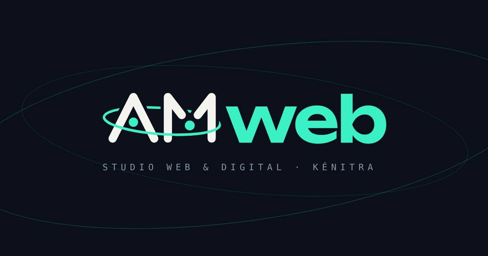

Les questions à poser avant de signer un devis, les pièges qui coûtent cher plus tard, et ce qu'un site doit faire pour vous apporter des clients. Pour les commerçants, artisans, cabinets et PME de Kénitra, Rabat, Salé et de tout le Maroc.
Être trouvé sur Google ? Recevoir des appels ? Vendre en ligne ? Prendre des rendez-vous ? Un site qui veut tout faire à la fois ne fait rien bien. Écrivez l'objectif principal avant de demander un devis : il décide du type de site, des pages et du budget.
À demander« Quel type de site me conseillez-vous pour cet objectif, et pourquoi ? »
Votre adresse (monentreprise.ma ou .com) est un actif de votre entreprise. Elle doit être enregistrée à votre nom, pas à celui du prestataire. Sinon, changer de prestataire peut vouloir dire perdre votre adresse, vos emails et votre référencement.
À demander« Au nom de qui sera enregistré le domaine, et comment le récupérer ? »
Un hébergement « offert » ne l'est souvent que la première année. Vérifiez la durée incluse, le prix du renouvellement, la fréquence des sauvegardes et la présence du HTTPS (le cadenas dans le navigateur).
À demander« Que coûte le site la deuxième année, tout compris ? »
Au Maroc, la grande majorité des visites se fait depuis un smartphone. Le site doit être conçu d'abord pour le mobile : textes lisibles, boutons faciles à toucher, numéro cliquable, WhatsApp à portée de pouce.
À demander« Puis-je voir un site que vous avez réalisé, sur mon téléphone ? »
Une page qui met plusieurs secondes à s'afficher fait partir les visiteurs, surtout en 4G. Testez les sites du prestataire avec l'outil gratuit de Google, PageSpeed Insights : un bon score sur mobile est un bon signe.
À demander« Comment optimisez-vous les images et la vitesse ? »
Un titre et une description pour chaque page, une page par service, des textes écrits pour vos clients, un plan du site envoyé à Google Search Console. Ajouté après coup, le référencement coûte plus cher et prend plus de temps.
À demander« Qu'est-ce qui est inclus pour le référencement, concrètement ? »
Pour un commerce ou un cabinet, c'est souvent elle qui apporte le plus d'appels : elle s'affiche dans Google Maps et en haut des recherches locales. Le nom, l'adresse et le téléphone doivent être identiques sur la fiche et sur le site.
À demander« Vous occupez-vous de la fiche Google et de son lien avec le site ? »
Bouton WhatsApp, numéro cliquable, formulaire court, horaires visibles. Chaque étape en trop fait perdre des demandes. Et les demandes doivent vous arriver quelque part où vous les verrez vraiment.
À demander« Où vais-je recevoir les messages du formulaire ? »
Qui écrit les textes ? Qui fournit les photos ? Des photos réelles de votre activité inspirent plus confiance qu'une banque d'images. Décidez aussi des langues : français seul, ou aussi arabe et anglais, avec une mise en page adaptée à l'arabe.
À demander« Les textes et les photos sont-ils inclus dans le prix ? »
Le paiement à la livraison reste très utilisé au Maroc, et le paiement par carte passe par une banque et le Centre Monétique Interbancaire (CMI), avec un contrat au nom de votre entreprise. Prévoyez les deux, et une confirmation des commandes par téléphone ou WhatsApp.
À demander« Quels modes de paiement le site pourra-t-il accepter, et avec quelles démarches ? »
Des mentions légales, une politique de confidentialité conforme à la loi 09-08 sur les données personnelles (contrôlée par la CNDP) dès que vous collectez des noms ou des numéros, et des conditions générales de vente si vous vendez en ligne.
À demander« Ces pages sont-elles prévues dans le devis ? »
Pourrez-vous changer vous-même un prix, une photo, un horaire ? Qui fait les mises à jour et la sécurité ? Comment saurez-vous combien de visites et de demandes le site vous apporte ? Un bon devis répond à ces questions par écrit.
À demander« Que se passe-t-il le mois suivant la mise en ligne ? »
On répond à ces 12 points par écrit, avec des prix affichés et des facilités de paiement. Premier échange gratuit et sans engagement, en visio de 30 minutes, au téléphone ou au studio.